光学
在本教程中，我们将使用Optados来研究硅和铝的光学性质。
硅的性质
对于硅，我们将使用输入 cell 文件
Si.cell
%BLOCK LATTICE_CART
2.73 2.73 0.00
2.73 0.00 2.73
0.00 2.73 2.73
%ENDBLOCK LATTICE_CART
%BLOCK POSITIONS_FRAC
Si 0.0 0.0 0.0
Si 0.25 0.25 0.25
%ENDBLOCK POSITIONS_FRAC
SYMMETRY_GENERATE
KPOINTS_MP_GRID 10 10 10
SPECTRAL_KPOINTS_MP_GRID 14 14 14
以及 param 文件
Si.param
按常规运行 Castep。计算完成后，在硅上使用 Optados 输入文件运行 Optados。TASK : optics
JDOS_SPACING : 0.01
JDOS_MAX_ENERGY : 30
EFERMI : optados
DOS_SPACING : 0.1
BROADENING : adaptive # Default
ADAPTIVE_SMEARING : 0.4 # Default
OPTICS_GEOM : polycrystalline # Default
OPTICS_LOSSFN_BROADENING : 0.0
运行 Optados 后，我们得到若干输出 .dat 并且 .agr 文件。我们现在将检查它们。
Epsilon.dat
首先我们来看包含（多晶）介电函数的文件—— Si_epsilon.dat文件的内容看起来像
0.0000000000000000 14.107263205387552 0.0000000000000000
1.0003334444814937E-002 14.107363765236455 0.0000000000000000
2.0006668889629875E-002 14.107665455817445 0.0000000000000000
3.0010003334444812E-002 14.108168310237140 0.0000000000000000
1st 列对应于光子与其相互作用的能量，2并 是介电函数的实部，和 3rd 是虚部。
标题部分还包含求和规则的结果。 \int_0^{\omega'} \textrm{Im} \epsilon(\omega) \mathrm{d}\omega = N_\textrm{eff}(\omega')
# Result of sum rule: Neff(E) = 7.0939380864459736
哪里 N_\textrm{eff} 是参与吸收过程的有效电子数，且是能量的函数。
让我们使用xmgrace绘制它。尽管你可以绘制 dat 文件（在配置了一位二进制位以正确绘制所有内容后），但幸运的是，Optados 也生成了等效的 agr 包含相同数据的文件，但还对 xmgrace 图表进行了良好格式化。因此我们使用
xmgrace Si_epsilon.agr
并得到如下输出
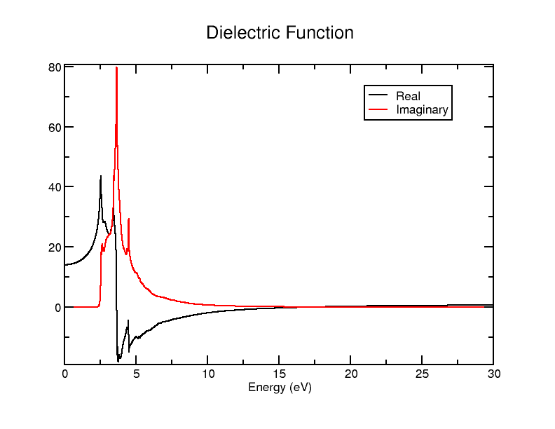
这是一个非常整洁的结果：它看起来正好符合你预期的状况。 德拜方程
该文件给出了计算所研究单元任何光学性质所需的所有数据。正如我们在本教程的后续部分将看到的，它是生成所有其他文件的基础。
吸收
接下来我们来看吸收数据。The dat 文件非常相似，这一次有两列：第一列st 是光子的能量，以及 2并 吸收系数。它看起来并没有特别不同，但如果你想验证，数据表应如下开始
你可以用xmgrace以与之前相同的方式绘制它（再次地） agr 文件由 Optados 编制）。它应如下所示
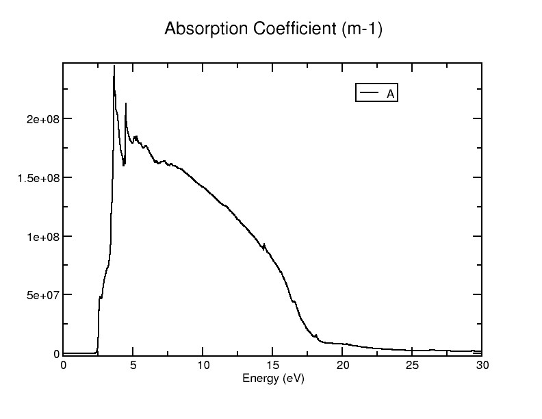
让我们来考察它是如何计算的。吸收系数的计算如下：
哪里 \omega 能量除以 \hbar, \kappa 是虚折射率 c 是光速。 \kappa 可由实部和虚部介电函数直接得到，已知复折射率是复介电函数的平方根——这导致了该方程
为了验证吸收计算中确实如此，我们可以使用Python脚本
import numpy as np
c = 3e8
hbar = 6.582119569e-16
def calculate_property(energy, epsilon_1, epsilon_2):
omega = energy / hbar
kappa = np.sqrt(0.5 * (-epsilon_1 + np.sqrt(epsilon_1**2 + epsilon_2**2)))
alpha = (2 * omega * kappa) / c
return alpha
data = np.loadtxt('Si2_OPTICS_epsilon.dat')
energy = data[:, 0]
epsilon_1 = data[:, 1]
epsilon_2 = data[:, 2]
result = calculate_property_coefficient(energy, epsilon_1, epsilon_2)
output_data = np.column_stack((energy, result))
np.savetxt('predicted_abs.dat', output_data, fmt='%e', delimiter=' ')
如果将此图与之绘制成一张图 Si_absorption.dat，你应该得到与之完全相同的结果 以上.
对于接下来我们将计算的性质，我们也将通过一个几乎完全相同的Python脚本来看它们的来源：只需修改 calculate_property 函数。
折射率
接下来我们将查看（实部和虚部）折射率。该数据位于 Si_refractive_index.dat （和 .agr) 文件。该文件与上一个类似，这一次仍然有三列——第 1st 是能量，第二项并 是实际折射率和3rd 是虚折射率。我们已经看过如何计算虚折射率 以上 （乘以某些常数后，你就能得到吸收系数）。实折射率的计算非常相似，只是变为
以及用于验证这一点的Python脚本也十分相似：函数变为
def calculate_property(energy, epsilon_1, epsilon_2):
omega = energy / hbar # Convert energy (eV) to angular frequency (rad/s)
kappa = np.sqrt(0.5 * (epsilon_1 + np.sqrt(epsilon_1**2 + epsilon_2**2)))
alpha = (2 * omega * kappa) / c # Absorption coefficient (1/m)
return alpha
Si_refractive_index.agr 使用 xmgrace 文件，但如果希望将它们一起绘图，则最好使用
关于批处理文件
double.bat
READ BLOCK "predicted_refractive_indices.dat"
BLOCK XY "1:2"
S0 LEGEND "Predicted real"
BLOCK XY "1:3"
S1 LEGEND "Predicted imaginary"
READ BLOCK "Si2_OPTICS_refractive_index.dat"
BLOCK XY "1:2"
S2 LEGEND "Optados real"
BLOCK XY "1:3"
S3 LEGEND "Optados imaginary"
LEGEND 0.9, 0.9
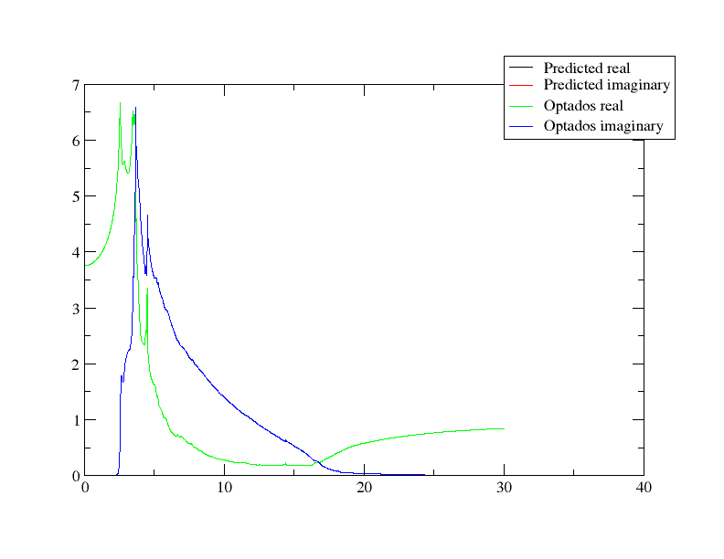
再次，从介电函数数据集导出的值完全相同，因此它们重叠——这证实了我们对这些性质是如何计算的。您可能会注意到，虚部折射率的形状是 与吸收相同 - 如我们所见，它只是乘以一个常数。
反射率
接下来我们将查看反射率。它可以在 Si_reflection.dat （和 .agr 再次）。1st 列表示能量，通常如此，而第二个并 是相应的反射系数。反射率是使用以下方法计算的。 菲涅尔方程，使用正入射，并假设入射光束来自空气/真空（实际和虚部折射率 n）1 以及 n2 第一介质的值 = 1）。虚部也被忽略。在此条件下，反射率的方程变为
哪里 \tilde{n} 复折射率（实部加虚部）。我们可以通过在Python脚本中将其拆分为函数来更方便地实现，以计算折射率（就像我们之前做的那样） 之前)，然后利用该结果来计算反射率。
def calculate_refractive_indices(epsilon_1, epsilon_2):
n = np.sqrt((epsilon_1 + np.sqrt(epsilon_1**2 + epsilon_2**2)) / 2)
kappa = np.sqrt((-epsilon_1 + np.sqrt(epsilon_1**2 + epsilon_2**2)) / 2)
return n, kappa
def calculate_property(n, kappa):
n_complex = n + 1j * kappa
reflectivity = np.abs((n_complex - 1) / (n_complex + 1))**2
return reflectivity
再次，我们绘制脚本的输出文件与之对应的图。 .dat 文件并查看它们是否完全相同：
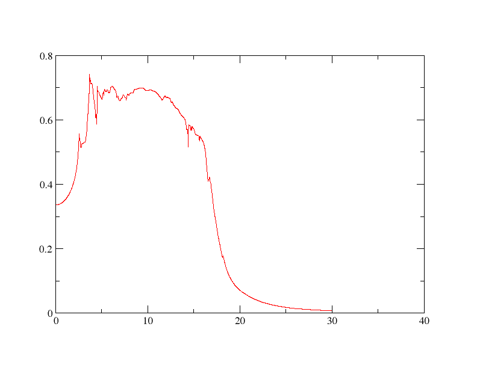
如果你感兴趣，可以更改使用的弗雷斯涅尔方程，并相应地调整脚本以包含虚部，观察其在不同介质、不同角度等情况下的表现——在反射率方面你可以研究的内容很多。
电导率
接下来我们将考察硅的光学电导率在 Si_conductivity.dat。 1st 列是能量，而第二个并 以及 3rd 列是电导率的实部和虚部，单位均为西门子/米（SI单位）。复数光学电导率可通过以下方法获得。 在高频极限下的近似 并将方程整理为：
\sigma_1(\omega) = \epsilon_0 \omega \epsilon_2(\omega)
\sigma_2(\omega) = -\epsilon_0 \omega (\epsilon_1(\omega) - \epsilon_\infty)
其中 \sigma_1 是实部和 \sigma_2 是虚数。如通常情况一样 \epsilon_1 对应于实介电常数和 \epsilon_2 到虚幻之中。在该计算中， \epsilon_\infty 被近似为 1。这可以在我们的 Python 脚本中实现为
def calculate_conductivity(epsilon_1, epsilon_2, energy):
omega = energy / hbar
sigma_1 = epsilon_0 * omega * epsilon_2
sigma_2 = -epsilon_0 * omega * (epsilon_1 - epsilon_inf)
return sigma_1, sigma_2
如同以往情况一样，请确保所有常量均已定义，并在实现过程中根据需要调整所有文件/变量名称。
由于有三列数据，将它们一起绘图会更方便——我们可以简单地重新利用我们的 上一批批处理文件 - 请确保适当更改文件名。输出应如下所示：
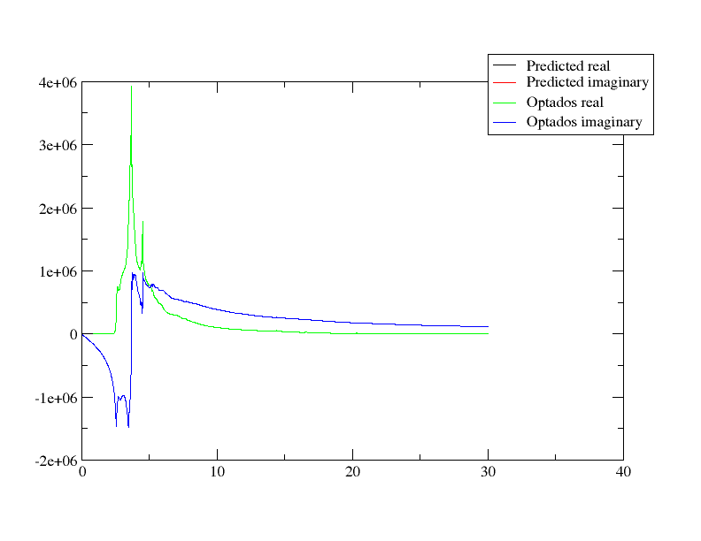
损失函数
最后，我们将考察损失函数在 Si_loss_fn.dat。 1st 列是能量，而第二个并 该能量对应的损失函数。文件的标题显示了与损失函数相关的两个求和规则的结果：
\int_0^{\omega'} \textrm{Im} -\frac{1}{\epsilon(\omega)}\omega \mathrm{d}\omega = N_\textrm{eff}
并且
\int_0^{\omega'} \textrm{Im} -\frac{1}{\epsilon(\omega)}\frac{1}{\omega} \mathrm{d}\omega = \frac{\pi}{2}
损失函数本身是从介电常数直接计算得出的：它仅仅是复介电常数倒数的虚部。
\text{Loss}(\omega) = \text{Im}\left(\frac{1}{\epsilon(\omega)}\right)
这导致了
\text{Loss}(\omega) = \frac{\epsilon_2(\omega)}{\epsilon_1(\omega)^2 + \epsilon_2(\omega)^2}
让我们通过修改函数来将此内容纳入我们的Python脚本中
def calculate_property(epsilon_1, epsilon_2):
loss_function = epsilon_2 / (epsilon_1**2 + epsilon_2**2)
return loss_function
将其与之绘图 Si_loss_fn.dat 在 Xmgrace 中我们得到了图表
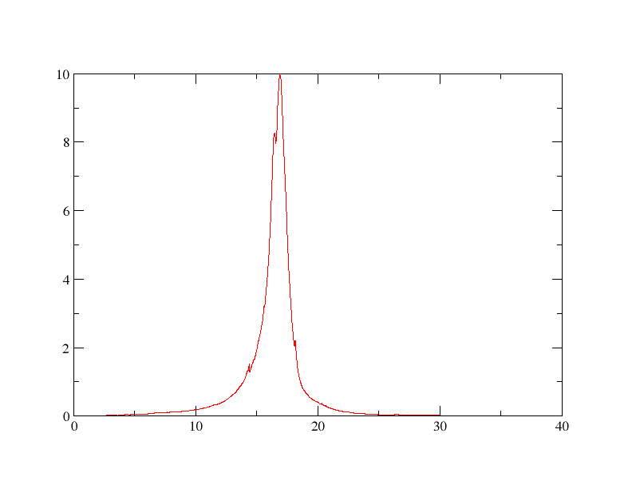
更改参数
现在我们知道Optados光学技术的作用及其工作原理，让我们尝试在其中更改一些参数。 选择输入文件 Si.odi，并重新运行 Optados，以观察其产生什么影响。
JDOS 参数
首先我们来看改变行的影响。 JDOS_MAX_ENERGY : 30我们将将其设置为10和100并进行绘图 Si_epsilon.agr 使用 xmgrace。对 10 的情况得到图形
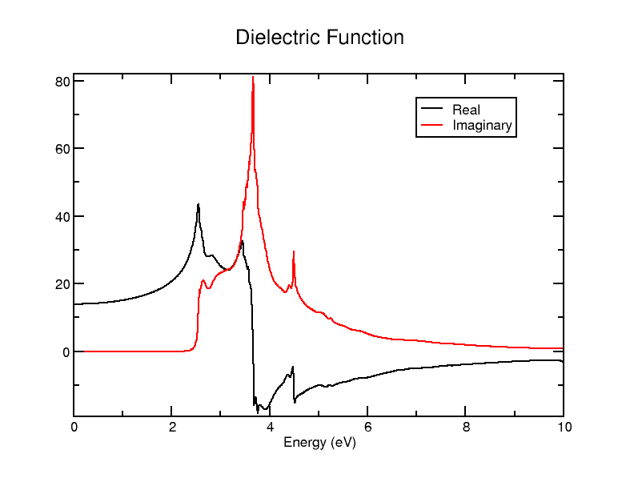
而 100 给予我们
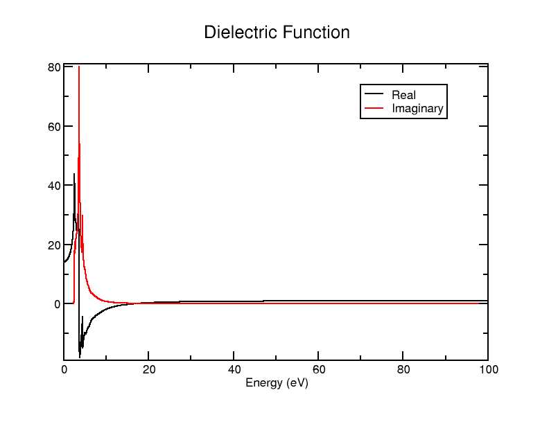
你也可以与结果进行比较 30你应该注意到的是，所有的图像都是一样的——这实际上只是改变了计算光学性质时的最大能量值。这些图表并不特别有趣（你可以进行更高最大能量的计算，并仅设置） WORLD XMAX 10 例如，可以看到最高到10 eV)，但它会影响求和规则的结果——这些结果位于标题中，因此不会出现在图表中。我们来尝试查看一下结果。 JDOS_MAX_ENERGY : 2, 5, 10, 30 和 100。
在 Si_epsilon.dat 不同最大能量下的求和规则结果应如下：
| JDOS 最大E | 求和规则结果 |
|---|---|
| 2 | 1.58E-6 |
| 5 | 4.40 |
| 10 | 6.42 |
| 30 | 7.09 |
| 100 | 7.11 |
这表明在2eV时几乎没有任何电子参与吸收过程，在5eV时超过一半的电子参与，而在此能量以上参与的电子数量逐渐增加。大多数电子似乎在2到30eV的能量范围内起作用。
与此同时，1 的结果如下st 以及 2并 求和规则在 Si_loss_fn 看起来大不相同：
| JDOS 最大E | 求和规则 1 | 求和规则 2 |
|---|---|---|
| 2 | 1.58E-6 | 2.18E-5 |
| 5 | 4.25E-3 | 1.54E-2 |
| 10 | 7.07E-2 | 7.58E-2 |
| 30 | 7.08 | 1.46 |
| 100 | 7.10 | 1.46 |
这里 1st 规则似乎在另一个区域（10 到 30 eV 之间）急剧上升，而 2并 趋向于另一个值，然后在相同区域再次迅速上升。
现在我们来观察改变后的效果。 JDOS_SPACING 值。让我们更改 JDOS_SPACING : 0.01 到1和0.001。我们将为此进行 JDOS_MAX_ENERGY : 30.
对于1来说，图像看起来像
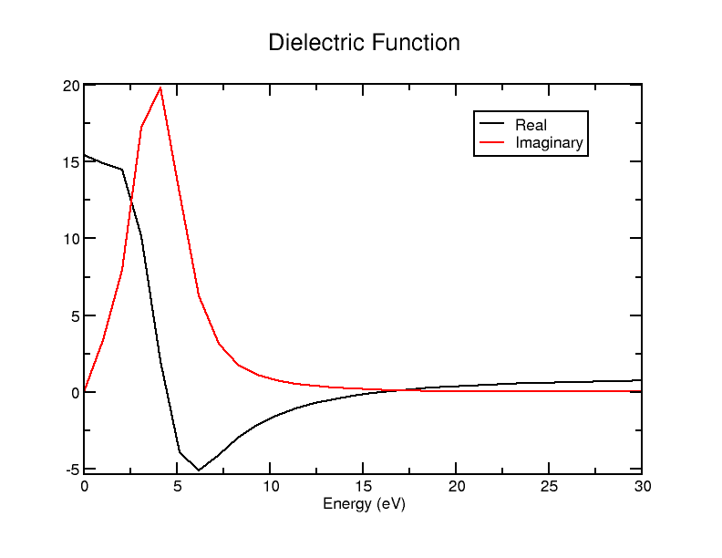
而当取 0.001 时看起来是
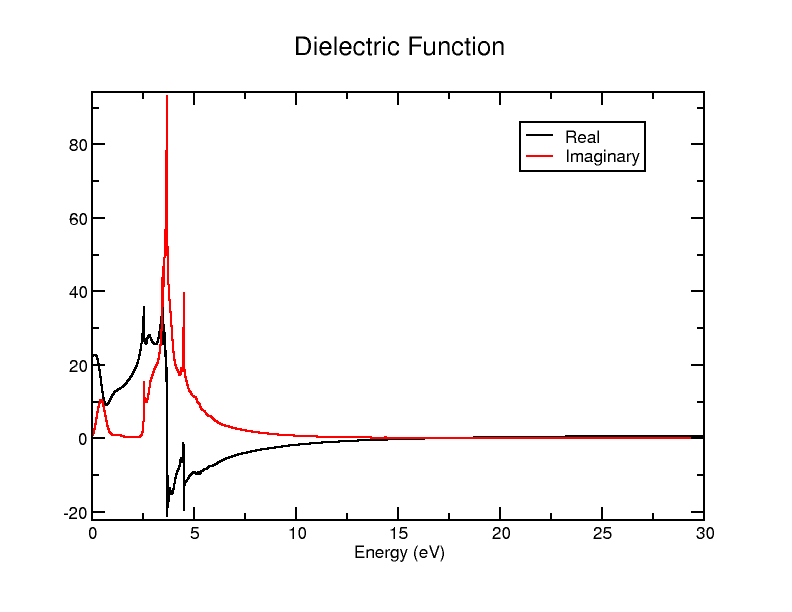
正如我们在这里所看到的，改变 JDOS_SPACING 这仅仅影响采样的频率：数值越小，它在考察介电函数时的能量间隔就越小，因此曲线也就越平滑。你可能会注意到，这些图表看起来与我们最初使用默认值 0.01 时的情况相同。 以上 - 0.01 已经足够，增加采样频率只会得到几乎相同的结果，但速度会变慢。这一点在求和规则计算中有所体现——间距越大，估算结果越粗糙，通常会导致数值偏大，而当间距达到 0.01 时，其准确性已基本不再提升。
| JDOS 间距 | Epsilon 和 | 损失总和 1 | 损失总和 2 |
|---|---|---|---|
| 0.001 | 6.73 | 6.72 | 1.50 |
| 0.01 | 6.74 | 6.73 | 1.50 |
| 1 | 8.28 | 7.22 | 1.39 |
展宽损失函数
还可以在损失函数的计算中包含额外的展宽。这通过设置关键字实现 optics_lossfn_broadening 在 odi 将文件设置为非零值。为了了解它做了什么，让我们设置 optics_lossfn_broadening : 1 并且重新运行 Optados。唯一不同的文件是那些 Si_loss_fn.dat 并且 .agr 文件——它们现在包含一个 3rd 列。1st 仍然是能量，2并 是未展宽的谱（与我们之前所做的结果相同） 以上)，以及 3rd 是展宽的谱图。绘制 thr agr 使用 xmgrace 的文件得到如下图形：
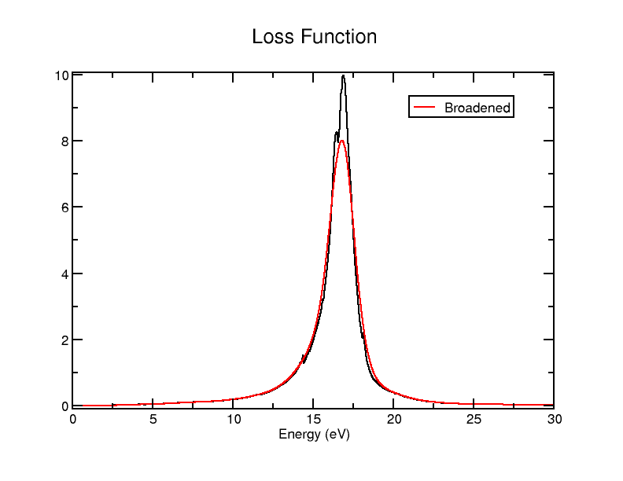
使其已经“平滑”了曲线，且 agr 文件包含未加宽的结果以供比较。